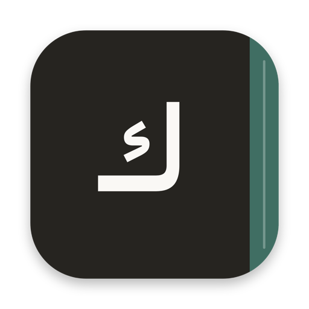
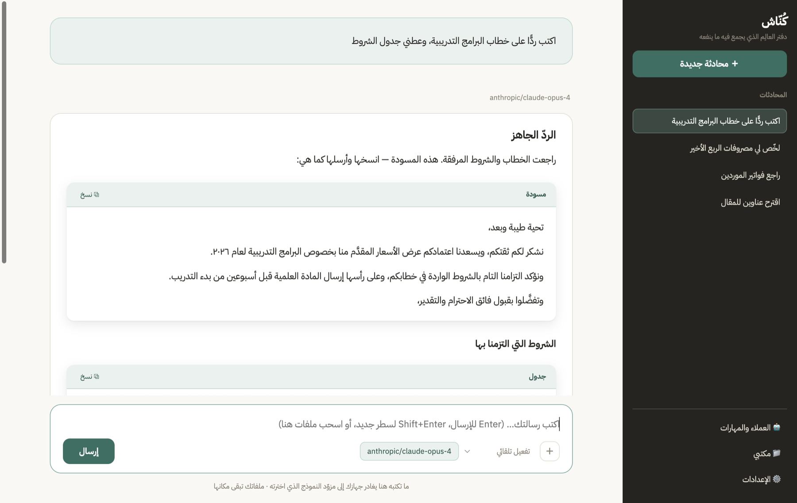
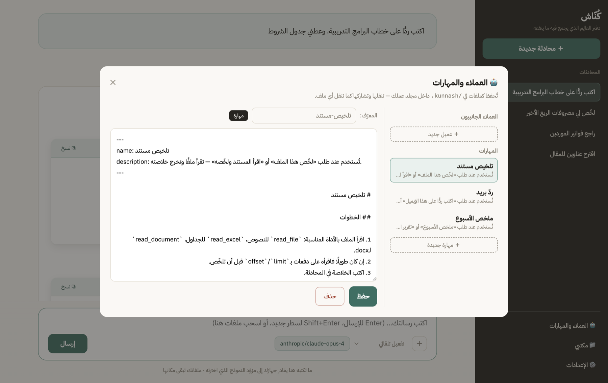

يشتغل على مجلدك
تختار مجلدًا على جهازك فيصير مكتبه. لا رفع ولا سحابة ولا نسخ — ملفاتك حيث هي.

دفتر العالِم الذي يجمع فيه ما ينفعه
مكتب عمل شخصي على الماك: يشتغل على مجلد تختاره أنت، وينفّذ مهامك المتكررة بمهارات تكتبها بنفسك، عبر النموذج الذي تربطه.
لا تعرف أيّهما؟ افتح عن هذا الماك من قائمة أبل — إن رأيت Apple M1 أو أحدث فالأولى، وإن رأيت Intel فالثانية.
يحتاج macOS 12 فأحدث · موقَّع وموثَّق لدى آبل فيفتح بنقرة بلا تحذيرات

تكتب طلبك بالعربية كما تقوله لزميل. والباقي يجري أمامك، خطوةً خطوة.
المخرجات/ملخص-الأسبوع.mdالمهارة انطلقت وحدها لأنك قلت ما يوافق عبارة تفعيلها — بلا قوائم ولا أزرار ولا تذكُّر لأمرٍ سرّي.
وما يخرج لك — مسودة بريد أو أمر طرفية أو جدول — يأتي في صندوق مُعنوَن بزرّ نسخ، لا مذابًا في الكلام. فتعرف بلمحة أين يبدأ ما تأخذه وأين ينتهي.
تختار مجلدًا على جهازك فيصير مكتبه. لا رفع ولا سحابة ولا نسخ — ملفاتك حيث هي.
نصوص وجداول Excel ومستندات Word. يبحث فيها ويستخرج منها، لا يخمّن.
يُنشئ الملفات ويعدّل القائم منها ويُخرج مستندات جاهزة — بإذنك في كل مرة.
مهمة تتكرر؟ اكتبها مرة في ملف، فتنطلق بعبارة. بل اطلب منه أن يكتبها لك بالكلام فيكتبها.
OpenRouter بضغطة واحدة، أو مفتاح مباشر من Anthropic أو OpenAI، أو نموذج على جهازك بلا إنترنت.
للدوام مجلده وللشخصي مجلده، ولكلٍّ مهاراته وأذوناته وعاداته. تبدّل بينها بنقرة.
واجهةٌ بلغتين تنقلب اتجاهًا كاملًا. ويبقى ردّ النموذج بلغة سؤالك — لا بلغة الأزرار.
تطبيقٌ يكتب في ملفاتك ويحذف منها يحتاج ثقةً أكبر من وعدٍ في صفحة. فهذه قيودٌ مبنية في الشيفرة، لا سياسةٌ مكتوبة.
../ ولا برابط رمزي يشير إلى خارجها.
وما تكتبه في المحادثة يغادر جهازك إلى الخدمة التي ربطتها — هذا ما يفعله أي تطبيق يستعمل نموذجًا، ونقوله صراحةً بدل أن نخفيه. وما عدا ذلك لا يغادر شيء: لا خادم لنا، ولا حساب، ولا إحصاءات.
ليست إعدادًا في التطبيق ولا صفًّا في قاعدة بيانات — بل ملف نصّي في مجلدك. تقرؤه وتعدّله وترسله لزميلك، ويبقى لك لو حذفت التطبيق.
---
name: ردّ بريد
description: تُستخدم عند طلب «اكتب ردًّا» أو «ردّ على هذا البريد».
---
# ردّ بريد
1. اقرأ الرسالة الأصلية واستخرج ما يُطلب منها بالضبط.
2. اكتب ردًّا مختصرًا: تحية، فجواب مباشر، فخطوة تالية إن وُجدت.
3. لا تعد بموعد لم يذكره صاحب الطلب.
4. احفظ الرد في «المخرجات» بصيغة نصّية.العبارة بين «…» في الوصف هي مفتاح التشغيل. تقولها بصياغتك — «اكتب لي ردًّا» — فتنطلق، لأن المطابقة تحتمل حشو الكلام الطبيعي.

وتبدأ بثلاث حزم جاهزة بدل صفحة فارغة: مكتب عام · كتابة ومحتوى · أرقام وجداول — تُنسخ إلى مجلدك عند التثبيت، فتصير ملكك تعدّلها كما تشاء.
كُنّاش مجاني ومفتوح المصدر، ولا بيع فيه ولا اشتراك ولا إعلان ولا جمع تبرّعات. أُخرج ابتغاء الأجر، ورخصته MIT: لك أن تستعمله وتعدّله وتوزّعه، بلا إذنٍ منّا ولا شكر.
وما تدفعه إن أردت أن يعمل هو ثمن النموذج الذي تختاره، تدفعه لصاحبه مباشرة لا لنا. ولو شغّلته بنموذج على جهازك فلا تدفع شيئًا لأحد.
ولا واحدة. قراءة Excel وWord مكتوبة في المشروع، والاختبارات بـnode:test بلا إطار.
تحرس حارس المسار والأذونات والأدوات وحلقة العمل واتجاه النصّ — وتمنع الإصدار إن سقط واحد منها.
التوقيع والتوثيق والحزمة بأدوات macOS وحدها، بلا تبعية بناء — سكربتٌ تقرؤه كاملًا.